마포그랑자이 59㎡,
지금 얼마면 들어갈까요?
답은 "전세 8억 후반,
매매 21억 안팎"이에요.
다만 같은 59㎡도 층·동에 따라
매매가가 2억 넘게 벌어져요.
저희 마포그랑자이점이
바로 이 단지 상가에 있어요.
호가 말고,
지난 1년 동안의 실거래가를 보면서
하나씩 짚어 볼게요.
안녕하세요. 착한언니복덕방 신촌자이엘라&마포그랑자이 (착한언니) 부동산입니다.
2014년 겨울부터 신촌 한 자리, 12년째 마포·서대문만 보고 있어요.
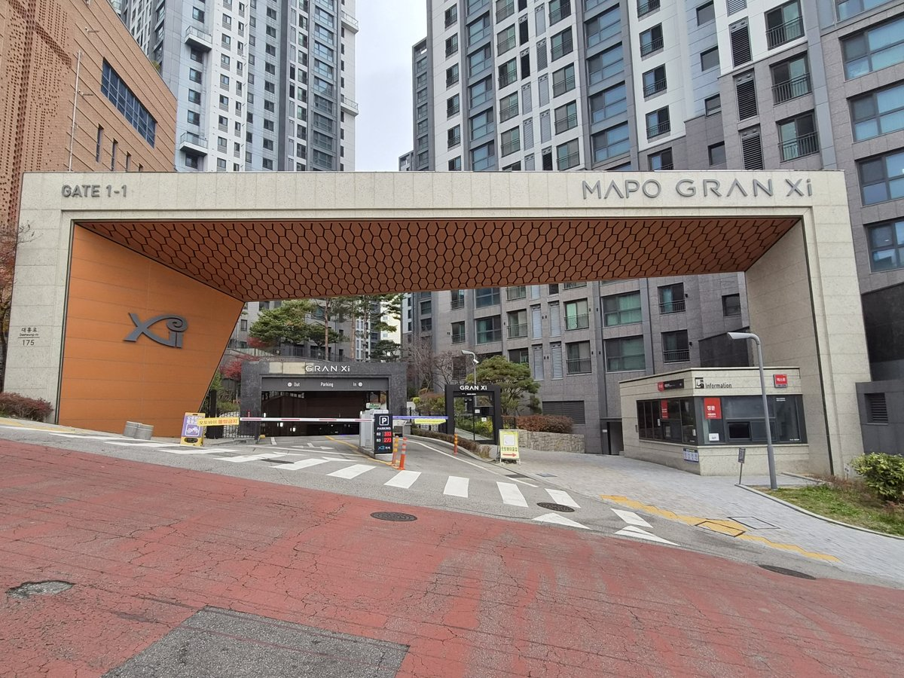
▲ 마포그랑자이 1단지 정문 GATE 1-1 —
대흥로 175 (직접 촬영 2026.11)
| 1. 마포그랑자이, 어떤 단지인가요? |
| 항목 | 내용 |
| 위치 | 마포구 대흥동 · 2호선 이대역 바로 앞 (6호선 대흥역도 이용) |
| 분양 때 이름 | 신촌그랑자이 → 마포그랑자이로 개명 |
| 규모 | 1,248세대 (임대 216세대 포함) · 최고 23층 (104동) |
| 사용승인 | 2020년 2월 21일 |
| 구성 | 1단지 101~111동 (11개 동, 15~23층, 1,050세대) · 2단지 201~204동 (4개 동, 7~12층, 174세대) · 타운하우스 3개 동 (24세대) |
| 용적률 · 건폐율 | 256% · 26% |
| 주차 | 1,472대 (세대당 약 1.2대) |
| 시공 | GS건설 |
건축물대장 총괄표제부·표제부
(2026.11.27 조회)
임대 세대 수는 분양 자료 기준
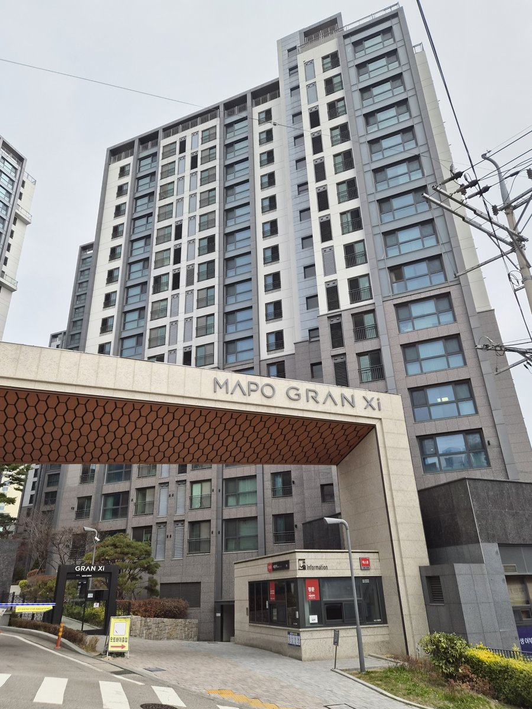
▲ 정문과 바로 뒤 동 — 정문 옆에
경비 Information 데스크 (직접 촬영)
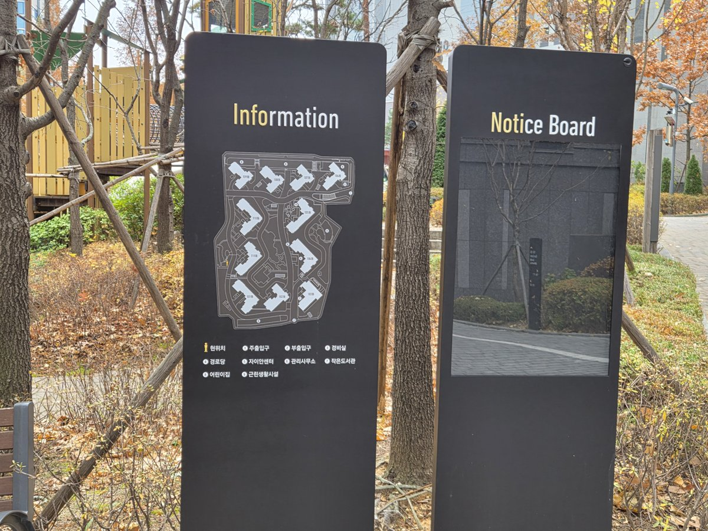
▲ 1단지 안내도 — 101~111동,
자이안센터·관리사무소·작은도서관·어린이집·경로당
(직접 촬영)
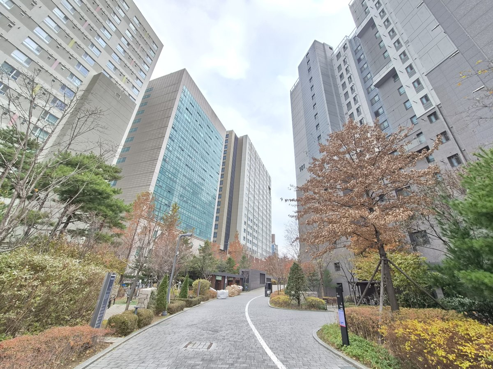
▲ 101동 옆 단지 안 길 —
차 없는 보행로 (직접 촬영)
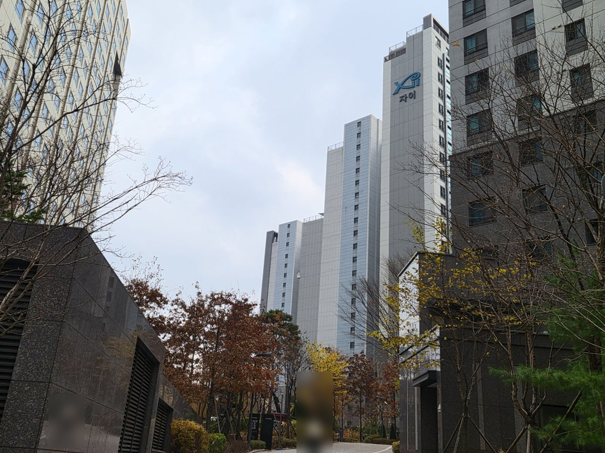
▲ 단지 안에서 본 동들 (직접 촬영)
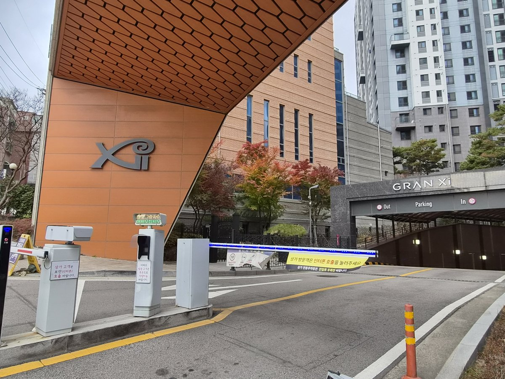
▲ 106동 앞 —
단지 안 소나무·단풍 조경 (직접 촬영)
| 2. 토지거래허가 이후, 매매가 확 줄었어요 |
| 기간 | 매매 거래 | 59㎡ | 84㎡ |
| 2025.1~3 | 17건 | 16억 ~ 17억 대 | 18억 4천 ~ 22억 |
| 2025.4~6 | 30건 | 17억 ~ 21억 8천 | 18억 7천 ~ 27억 |
| 2025.7~10 | 18건 | 21억 ~ 23억 | 24억 ~ 26억 8,500 |
| 2025.11~2026.11 (13개월) | 19건 | 20억 2천 ~ 23억 2천 | 23억 ~ 26억 1,500 |
국토부 실거래 (계약일 기준
해제·취소 제외
1·2단지 합산
2026.11 조회)
최근 한두 달은 신고가 더 늘 수 있어요
2025년 상반기에는 한 달에
10건 넘게 거래되면서
59㎡가 16억대에서
21억대로 올라왔어요.
그런데 2025년
10월 서울 전역이
토지거래허가구역이 된 뒤로는
13개월 동안 19건,
한 달에 1~2건꼴로 줄었어요.
✔ 가격은 크게 꺾이지 않았어요.
59㎡ 20억~23억,
84㎡ 23억~26억
사이에서 거래량만
줄어든 보합 흐름이에요
✔ 반면 전세·월세는 같은
기간 280건 넘게 계약됐어요.
실거주 요건 때문에
사는 사람은 줄고,
빌려 사는 수요는 그대로인 거죠
| 3. 전세, 지금 얼마에 계약되나요? |
| 전용 | 신규 전세 중위 | 전세 범위 (신규·갱신) | 월세 예시 |
| 59㎡ | 8억 8,500만 (38건) | 6억 6,150만 ~ 9억 8,000만 | 7,000 / 60 · 3억 / 215 |
| 84㎡ | 10억 9,750만 (44건) | ~ 13억 5,000만 | 9억 / 100 · 5,000 / 330 |
국토부 전월세 실거래
신규=새로 맺은 계약,
갱신 계약은 시세보다 낮게 잡혀요
최근분은 신고가 더 늘 수 있어요
✔ 갱신 계약(5% 상한)이
섞여 있어서,
새로 구할 때는 '신규
중위'를 기준으로 보세요
| 4. 최근 매매 실거래 |
| 거래월 | 전용 | 층 | 매매가 |
| 26.10 | 96㎡ | 8층 | 28억 5,000만 |
| 26.7 | 59㎡ | 4·5층 | 22억 3,000만 |
| 26.6 | 84㎡ | 7층 | 26억 1,500만 |
| 26.5 | 84㎡ | 3층 | 23억 |
| 26.5 | 59㎡ | 11층 | 21억 4,000만 |
| 26.4 | 84㎡ | 10층 | 24억 9,500만 |
| 26.3 | 59㎡ | 17층 | 22억 8,000만 |
| 25.12 | 59㎡ | 14층 | 23억 2,000만 |
국토부 실거래 (해제·취소 제외)
2026.11.2 계약 59㎡
15억 5,000만 1건은
시세와 차이가
커서(특수 거래 가능성) 표에서 뺐어요
✔ 같은 59㎡도
저층 20억대 초반
~ 고층 23억대,
2억 넘게 차이 나요
✔ 거래가 적은 만큼 최근 한 건이
시세처럼 보이기 쉬워요.
동·층·향을 같이 봐야 해요
그럼 지금 호가는?
(네이버 부동산, 11월 28일)
실거래는 지난 거래예요.
지금 시장에 실제로 나와
있는 가격도 같이 볼게요.
| 매매 호가 | 매물 수 | 호가 범위 | 중간값 |
| 59㎡ | 18건 | 22억 ~ 23억 5,000 | 약 23억 |
| 84㎡ | 22건 | 24억 8,000 ~ 28억 | 약 26억 |
| 96㎡ | 2건 | 28억 5,000 ~ 32억 | - |
| 113㎡ | 1건 | 39억 | - |
네이버 부동산 마포그랑자이
매매 매물 (2026.11.28 기준)
같은 집이 여러 중개사에 올라온 건 1건으로
가격 범위로 올라온 매물은 낮은 가격 기준
호가는 실제 거래가가 아니에요
| 전세·월세 호가 | 84㎡ | 59㎡ |
| 전세 (집 전체) | 10억 5,000 ~ 14억 (6건) | 10억 5,000 (1건) |
| 전세 (84C '투룸' 매물) | 8억 ~ 9억 (6건) | - |
| 반전세 | 4억/300 · 5억/360~440 · 7억/160 · 8억/220 | 4억/250 · 5억/200 · 7억/150 |
| 분리형 원룸 월세 (84C) | 1,000/135 · 2,000/130 · 5,000/120 | - |
네이버 부동산 전세·월세 매물
26건 (2026.11.28 기준)
금액 단위: 보증금/월세(만 원)
84C는 세대분리형 타입이라,
일부(투룸·원룸)만
따로 임대한 매물은 집 전체 전세와 나눠 봤어요
✔ 매매 호가는 59㎡ 23억,
84㎡ 26억 언저리에
몰려 있어요.
최근 실거래보다
1억~2억 높게 나와 있어요
✔ 거래는 뜸한데 호가는
버티는 중 —
실제 계약은 호가에서
얼마나 조정되느냐가 관건이에요
✔ 84C는 세대분리형이에요.
현관부터 따로 쓰는 완전히 독립된
원룸이 붙어 있어서, 실거주하면서
그 원룸을
월세(1,000/135 안팎)로
놓을 수 있어요
✔ 전세는 집 전체 기준 10억
중반~14억까지 넓게 나와 있어요.
최근 신규 계약
중위(84㎡ 약 11억)와
같이 보세요
| 5. 커뮤니티와 생활 |
| 어디 | 시설 (2022년 기준) |
| 1단지 커뮤니티 | 수영장 · 헬스 · 사우나 · 스크린골프 |
| 103동 클럽 자이안 | 기구 필라테스 (개인·듀엣·6인 그룹) |
| 2단지 커뮤니티 | GX·문화강좌 — 플라잉요가 등 |
2022년 입주민 블로그 소개 기준
지금 운영 여부·이용료는
현장 안내판으로 다시 확인
✔ 지금도 수영장 운영 중이에요.
강북 단지에서 수영장까지
있는 커뮤니티는
흔하지 않아요 (마프자도 있어요)
▲ 커뮤니티 CLUB XIAN
입구 (직접 촬영 2026.11)
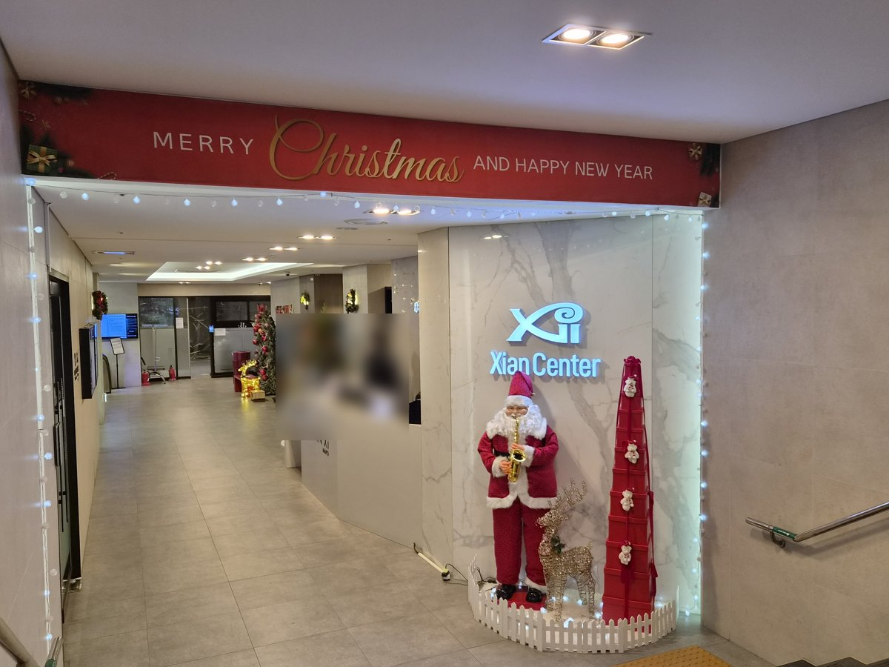
▲ 자이안센터 로비 — 안내 데스크,
연말 장식까지 (직접 촬영)
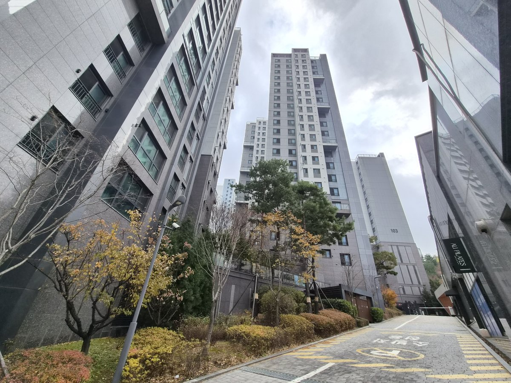
▲ 103동 쪽 —
필라테스(클럽 자이안) 간판이
보여요 (직접 촬영)
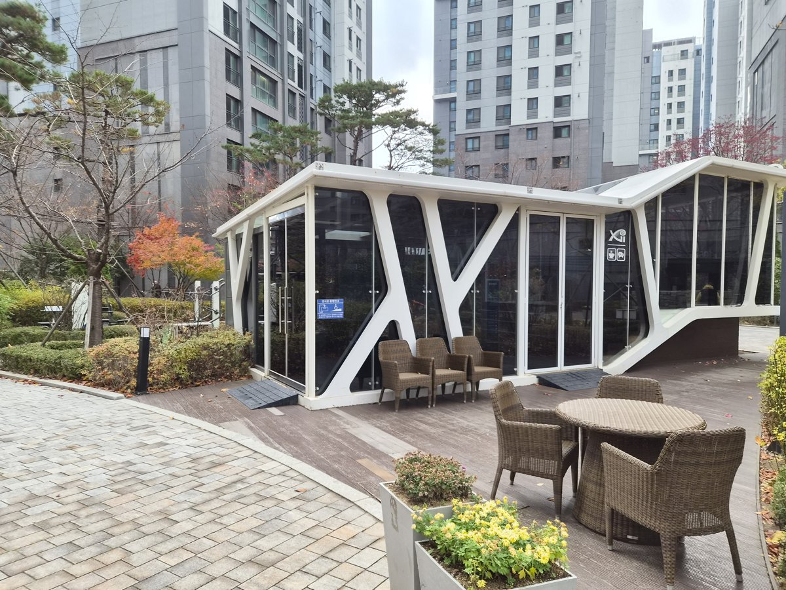
▲ 단지 안 유리 라운지 —
앞에 야외 테이블 (직접 촬영)
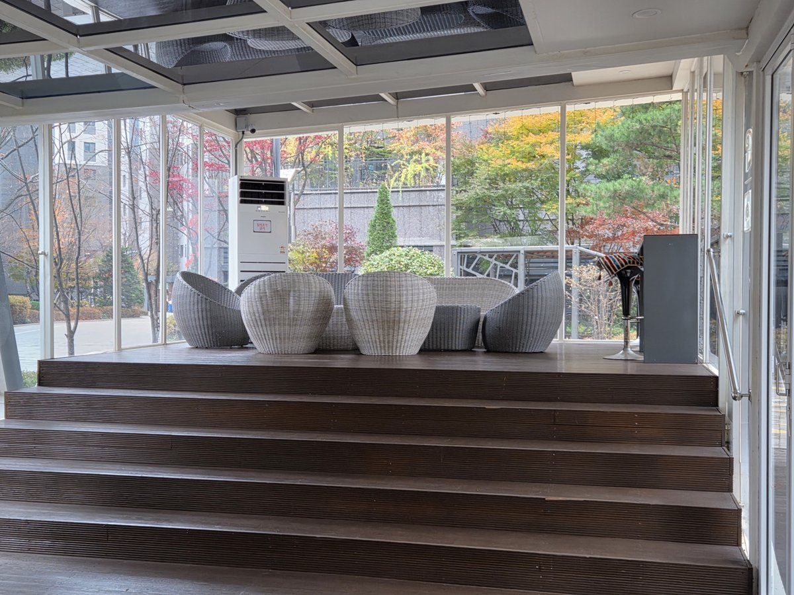
▲ 유리 라운지 안 — 통창으로 조경이
보이는 계단식 좌석 (직접 촬영)
✔ 단지 안에
작은도서관·어린이집·경로당까지
있어요 (안내도 기준)
✔ 커뮤니티 말고도
유리 라운지 같은 쉼터가
따로 있어서,
산책하다 앉아 쉬기 좋아요
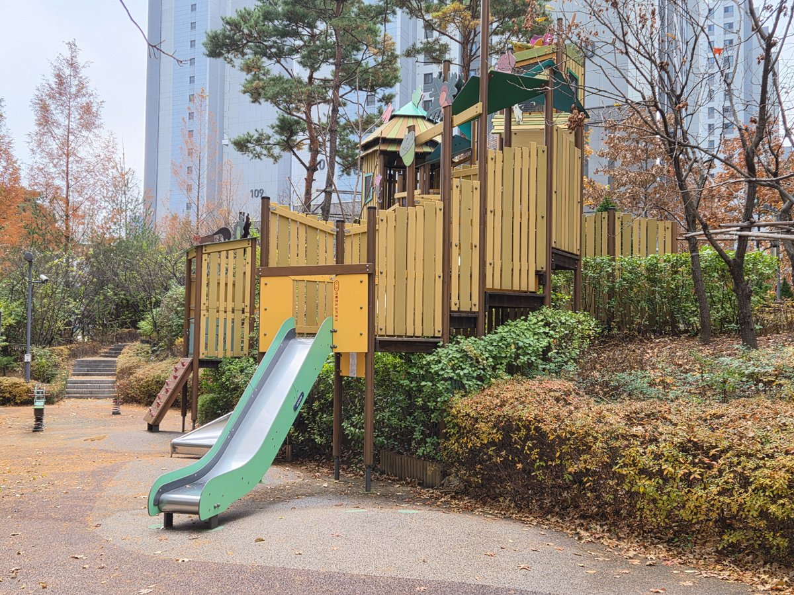
▲ 놀이터 — 원목 놀이 구조물 (직접 촬영)
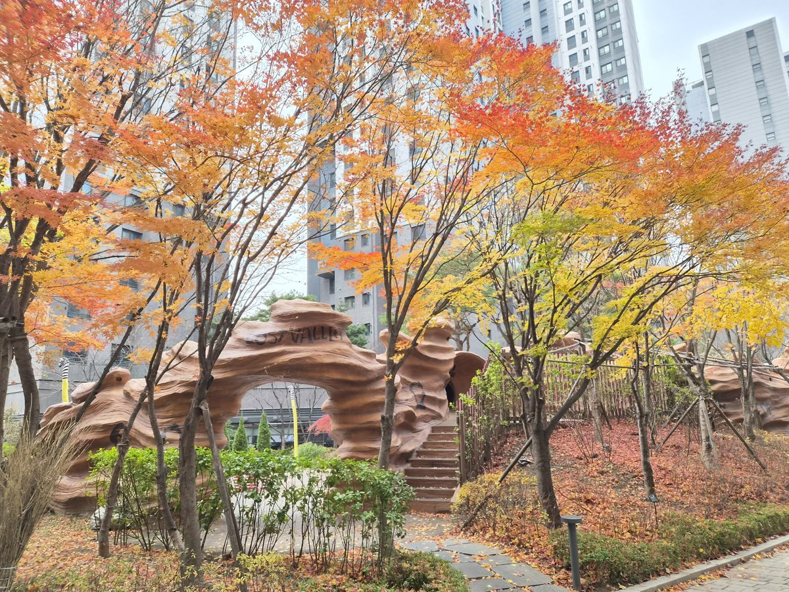
▲ LOST VALLEY 놀이터 —
단풍 사이 동굴형 놀이시설 (직접 촬영)
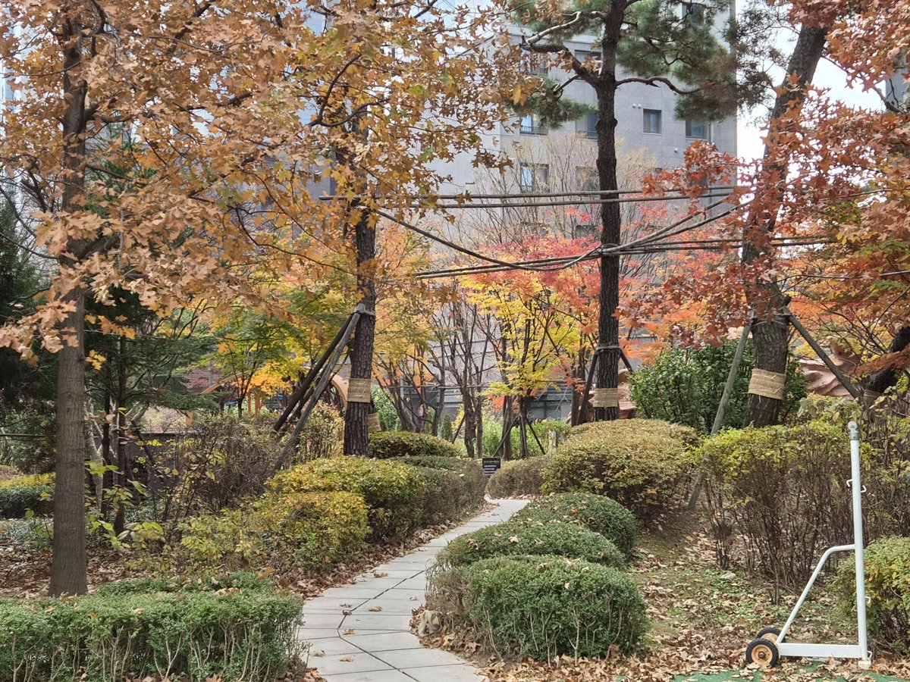
▲ 동 사이 정원 산책로 (직접 촬영)
관리비, 실제 고지서로 볼게요
저희가 거래하면서
받은 중간관리비
정산서 두 장이에요.
동·호수와 개인 정보는 빼고
숫자만 옮겼어요.
| 59㎡형 (공급 80.85㎡) | 84㎡형 (공급 112.95㎡) | |
| 한 달 관리비 합계 | 30만 470원 (2025년 8월분) | 37만 4,690원 (2025년 7월분) |
| 일반관리비 | 3만 5,040원 | 5만 790원 |
| 경비비 | 2만 4,090원 | 3만 5,220원 |
| 청소비 | 2만 2,640원 | 3만 3,140원 |
| 커뮤니티 운영비 | 2만 5,000원 | 2만 6,130원 |
| 장기수선충당금 | 5,680원 | 8,300원 |
| 세대 전기료 | 6,450원 | 7만 3,640원 |
합계는 고지서 '미납 관리비'에
찍힌 한 달 전체 금액
항목별 금액은 이사 나가는
달
중간정산분(59㎡형 9/1~25, 84㎡형 8/1~27)이라
한 달 치보다 조금 적어요
전기·수도는 세대 사용량에 따라 달라요
✔ 한여름 기준으로
59㎡형 30만 원,
84㎡형 37만 원대예요
✔ 커뮤니티 운영비가
세대당 월 2만
5천 원 안팎 따로 붙어요.
수영장·헬스·사우나를
운영하는 단지라 그래요
✔ 난방은 개별난방이라
겨울 가스요금은
관리비와 별도로 나와요
✔ 장기수선충당금은
집주인 부담이에요.
세입자라면 이사 나갈 때
정산해서 돌려받으세요
사무소에서 매일 보는 좋은 점
✔ 평지예요.
마포는 언덕 단지가
많은데, 그랑자이는
단지 안팎이 평평해서
유모차·어르신 동선이 편해요
✔ 커뮤니티가 잘 돼 있어요.
입주민 만족도가 높은 편이에요
아쉬운 점
✔ 초등학교예요.
배정되는 창천초가 빌라 밀집 지역과
같이 있고,
학급 수가 적은 편이에요
✔ 그래서 초등 자녀가
있는 집은 학교·학원가가
가까운 마포프레스티지자이를
같이 보는 경우가 많아요
| 6. 대흥동 다른 단지와 비교하면 |
| 단지 | 준공 | 59㎡ 매매 중위 | 84㎡ 매매 중위 |
| 마포그랑자이 | 2020 | 21억 4,000만 | 24억 9,500만 |
| 마포자이2차 | 2014 | - (59타입 없음) | 26억 |
| 마포태영 | 1999 | 16억 8,000만 | 20억 9,800만 |
| 대흥동세양 | 2000 | - | 15억 5,500만 |
국토부 실거래 2025.11~2026.10
대흥동 전체 비교는 「대흥동
아파트 시세 2026」 글 참고
| 7. 착한언니 체크 |
전세를 구한다면
✔ 갱신 말고
신규 계약 기준으로 시세를
보세요 · 동·층별 호가
차이가 커요
매수를 생각한다면
✔ 서울 전역 토지거래허가 —
실거주 요건 · 시가
15억·25억 대출 구간을
타입별로 확인
집주인이라면
✔ 전월세가 많이 도는 단지라 입주
날짜·옵션으로 차별화하면
빨리 맞춰져요
| 8. 정리하면 |
✔ 마포그랑자이:
대흥동 1,248세대,
2020년 입주 (옛 신촌그랑자이)
✔ 59㎡ 매매
20~23억 · 84㎡
23~26억 · 신규 전세
59㎡ 8억 8,500
✔ 지금 호가는 59㎡ 약
23억 · 84㎡ 약 26억
(11.28 네이버) —
실거래보다 1~2억
높게 나와 있어요
✔ 토허 이후 매매는
13개월 19건으로
줄었지만, 전월세는
꾸준히 계약되는 단지
마포그랑자이점이 단지 상가에 있어요. 동·층 비교가 필요하시면 편하게 들러 주세요.
| 📝 착한언니 현장 노트 |
저희 사무소가 이
단지 상가에 있어서,
동별 채광·소음·엘리베이터
대기 같은
건 매일 보고 있어요.
| 📊 착한언니복덕방 실거래 도구 단지 시세 · 내 예산 진단 리포트 신촌 오피스텔 · 청약까지 중개사가 매일 보는 시세표, 그대로 열어 드려요 👉 unnizip.kr/app |
새 글 알림을 받고 싶으시다면
블로그 이웃 추가 해 두세요.
다음 편은 마포프레스티지자이,
그다음은 마포 신축
3대장 비교예요.
🏢 매수·매도·전세 상담은
카카오톡 채널 착한언니복덕방에
「단지·평형·예산」을 남겨 주세요.
동·층까지 비교해 드려요.
인스타그램 @goodsister4080
이런 내용을 카드뉴스로 정리해요
쉽고 꾸준하게, 꼭 부자되세요!
────────────────
출처: 국토부
실거래(2026.11 계약분까지)
단지 개요는
건축물대장(2026.11.27 조회)
이 글은 투자 권유가 아니에요
착한언니복덕방 | 신촌자이엘라
& 마포그랑자이 부동산
4인 전원 공인중개사
중개보조원 없음
중개사무소:
마포그랑자이(착한언니)부동산공인중개사사무소
대표 공인중개사: 신혜선
등록번호 11440-2022-00085
소재지: 서울특별시 마포구 대흥로 175,
상가4동 102호 일부 (대흥동)
연락처: 02-707-3434
서울시 지정 글로벌 부동산중개사무소
English available
카카오톡 채널:
pf.kakao.com/_xcxoBxnX